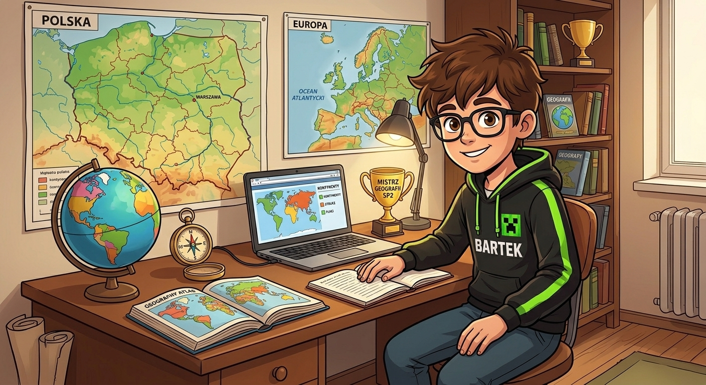

Interaktywny trening wiedzy • Klasa 5 (SP nr 2 w Jeleniej Górze)

Zamiast siedzieć godzinami nad podręcznikiem i wkuwać na pamięć, zrobiłem dla nas tę aplikację, żeby nauka przed klasówką była jak dobra gra. Możesz ćwiczyć pojedynczymi tematami po 10 pytań albo odpalić Wielki Test ze wszystkich 46 pytań!
🎯 Wyzwanie: Dasz radę przejść cały quiz bez ani jednego błędu? Sprawdź się i powalcz o szóstkę!